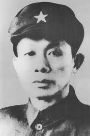

冯白驹
冯白驹（1903—1946），海南琼海人，中国共产党早期领导人之一，著名教育家和革命家。他长期从事海南及华南地区的革命工作，致力于推动教育和社会进步。
冯白驹坚守革命信念，勇于献身，为推进海南的革命事业和群众教育做出了重要贡献。他注重思想启蒙和教育普及，使当地青年树立坚定信念。
在家庭和个人修养方面，冯白驹强调正直、勤勉、爱国。他注重对子女和青年进行品德教育，强调责任感、独立性与社会担当，把国家和人民利益置于个人之上。
冯白驹的家风和革命精神，为海南乃至全国的红色教育提供了宝贵范例。他的事迹激励后人秉持信念，为社会进步和国家建设不懈努力。
← 返回中国地图